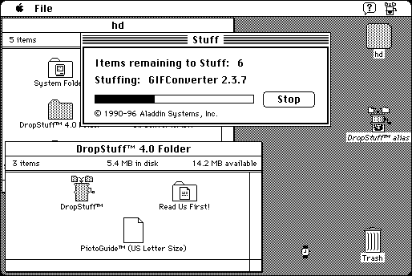

Download
dropstuff_40.zip (488K) DropStuff 4.0 repackaged into a zipped hfs disk image and checksum file. The disk image can be mounted with Mini vMac.
dropstuff_40_installer.bin (504K) DropStuff 4.0 in the original format.
copyright: Aladdin Systems, Inc.
mod date: Mar 28, 1996
license: shareware
last known url
(gone)
Creates StuffIt archives with drag & drop. Requires System 7. Comes with "Expander Enhancer", which allows Stuffit Expander to decode many additional archive kinds.

Download other versions
dropstuff_45_installer.bin (860K) DropStuff 4.5
Version 4.5 is also available, but the registration dialog is partly offscreen, so can't choose 'not yet'. Version 5.1 and 5.1.2 mostly work, but self extracting archives they create won't work on the Mac Plus, and the Alladin Compression Control Panel doesn't work. The installer for version 5.5 claims 8M of RAM is required, but it will allow you to install anyway, and it works except for the same problems as in previous versions.
If you find these downloads useful, please consider helping the Gryphel Project, which hosts them.
Here are the md5 checksums for the downloads, signed with Gryphel Key 5:
--------- GRY SIGNED TEXT --------- 65598315bd7e1b37116ab1eb10446dfe dropstuff_40.zip c9d719b2c4fe7797e9e2b2ff6d3ecf34 dropstuff_40_installer.bin a60bdb9a2e1d88de9e06f2c2a08f298d dropstuff_45_installer.bin ------- BEGIN GRY SIGNATURE ------- Gry/4Xa8CFcUzxdN/J/Lp+uDvugHI1mhq7IwfVZ8lCB6S8rf9S/55+wU0W/FgS+Y 9NIlqlN3rz3mi92yhGK8I/GjqJ4JldOBhlmW4LsEq0NEYeGTh1CERx1a9ykKq87z 7YrwLU/CrZsr7b/rdtul7Xe9s073FeQNP/g7idwoKxbsXe/1ViE5xUcyrhNjsBVx -------- END GRY SIGNATURE --------